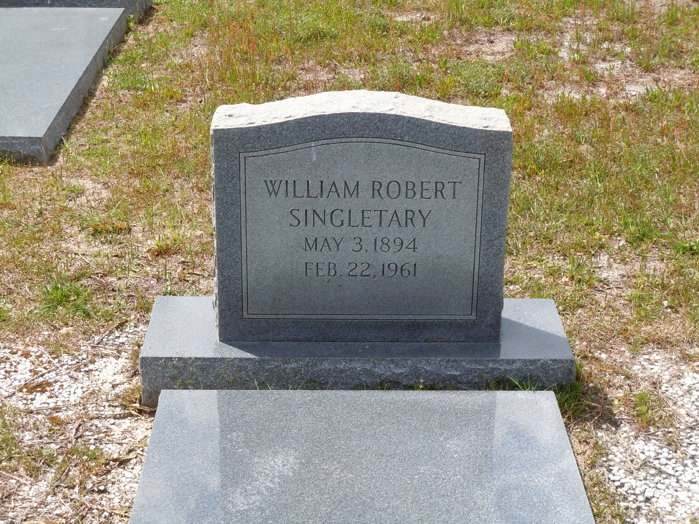

William Robert Singletary
1894–1961
Life Events
Born: May 3, 1894 — Florida
Died: February 22, 1961 — Live Oak, Suwannee County, Florida
Family
Father: Jacob A. Singletary
Mother: Ida Alla Miller
Siblings
Military Service
No military service information has been added.
Biography
William Robert Singletary was born on May 3, 1894, in Florida, the son of Reverend Jacob A. Singletary (1852–1931) and Ida Alla Miller Singletary (1873–1945). He grew up in Lafayette County, Florida, where his family lived in the rural community around Day and Bethel Creek Baptist Church.
The 1900 United States Federal Census records William as Robert Singletary, living with his parents and siblings in Lafayette County. His birth was recorded as May 1894. The household included his sisters Eliza, Sarah, and Emma, and his brother Henry.
In the 1910 census, Robert was again living with his parents in Lafayette County. The household included several of his siblings, including Henry, Giddy, and Jamie. Census records from this period contain inconsistencies in the children's reported ages, which should be considered when evaluating their birth years.
On June 5, 1918, William registered for the World War I draft in Lafayette County, Florida. His registration identifies him as William Robert Singletary, living in Dowling Park, Florida, and employed by Jacob Singletary. He described himself as having brown eyes and brown hair. The registration records his birth date as May 3, 1897, three years later than the date recorded in the 1900 census, his death certificate, and his gravestone. The reason for this discrepancy is unknown.
The 1920 United States Federal Census records Robert, age 22, living with his parents in Lafayette County. In 1930, he was still living in the household of Jacob and Ida Singletary in the Day community. At that time, he was recorded as age 32 and employed as a laborer at a sawmill. These reported ages are consistent with a birth around 1897 or 1898 rather than 1894.
Following his father's death in May 1931, William continued living with his mother and several siblings. The 1940 census records Robert Singletary, age 45, in the household of his widowed mother, Ida, along with his brothers Henry and Giddy and his widowed sister Sally Spies. His reported age in 1940 is consistent with a birth in May 1894.
William's death certificate records that he was never married. No spouse or children have been identified in the records examined during this research.
William Robert Singletary died on February 22, 1961, at Suwannee County Hospital in Live Oak, Florida. His death certificate records his usual residence as Mayo, Lafayette County, Florida. The immediate cause of death was recorded as probable acute myocardial failure, associated with coronary occlusion and hypertensive cardiovascular disease. He was sixty-six years old according to his recorded birth date.
His obituary reported that funeral services were held at Bethel Creek Baptist Church, with Reverend Tom Allen officiating. William was buried on February 24, 1961, at Bethel Creek Baptist Church Cemetery in Lafayette County, Florida.
William's obituary identified seven surviving siblings: sisters Eliza Bell, Sally Spies, and Emma Evans, and brothers Henry, Giddy, Jamie, and Jasper Singletary. This obituary provides important evidence for reconstructing the children of Reverend Jacob A. Singletary and Ida Alla Miller.
William's gravestone records his birth as May 3, 1894, and his death as February 22, 1961. These dates agree with his death certificate. Although his 1918 draft registration and some census records suggest a later birth year, May 3, 1894, is retained provisionally because it is supported by the 1900 census, his death certificate, and his gravestone.
Photos
No additional photographs have been added.
Grave & Burial

Bethel Creek Baptist Church Cemetery, Day, Lafayette County, Florida
Sources
-
1900 United States Federal Census – Jacob A. Singletary Household
Type: censusThe 1900 United States Federal Census records Jacob Singletary and his wife Ida living in Lafayette County, Florida, with five children: Eliza E., Sarah, Robert, Emma, and Henry Singletary. Sarah's birth is recorded as August 1892, and Robert's as May 1894. Robert is identified as William Robert Singletary through subsequent records. The household provides early documentation of the children of Reverend Jacob A. Singletary and Ida Alla Miller. Later research identifies Sarah as Sarah 'Sallie' Spies, although her married surname is not recorded in this census.
Location: Lafayette County, Florida
Supports: Jacob and Ida Singletary living together in Lafayette County in 1900, Eliza E., Sarah, Robert, Emma, and Henry listed as children in the household, Sarah Singletary's birth recorded as August 1892, William Robert Singletary's birth recorded as May 1894
-
1910 United States Federal Census – Jacob A. Singletary Household
Type: censusThe 1910 United States Federal Census records Jacob Singletary and his wife Ida living in Precinct 1, Lafayette County, Florida, with six children: Sallie, Robert, Emma, Henry, Giddy, and Jamie. The household appears on lines 39–46 of Enumeration District 64, Sheet 10A. The census provides evidence of the family's continued residence in Lafayette County and identifies younger children Giddy and Jamie, who were subsequently named as surviving brothers in William Robert Singletary's 1961 obituary.
Location: Precinct 1, Lafayette County, Florida
Supports: Jacob and Ida Singletary living in Lafayette County in 1910, Sallie, Robert, Emma, Henry, Giddy, and Jamie recorded in the household, Giddy and Jamie identified as sons of Jacob and Ida, William Robert Singletary recorded as Robert in the household
-
1918 World War I Draft Registration Card of William Robert Singletary
Type: militaryWorld War I draft registration card completed June 5, 1918, for William Robert Singletary, age 21, residing in Dowling Park, Florida. The card records his birth as May 3, 1897, near Mayo, Florida, differing from the May 3, 1894, date recorded on his death certificate and gravestone. William identified Jacob Singletary as his employer and nearest relative, both associated with Dowling Park, Florida. The card records his father's birthplace as Bainbridge, Georgia. William was described as having brown eyes and brown hair, with no physical disabilities reported. Registration with the draft does not establish that he served in the military.
Location: Lafayette County, Florida
Supports: William Robert Singletary registered for the World War I draft on June 5, 1918, William reported his birth date as May 3, 1897, William resided in Dowling Park, Florida, Jacob Singletary was identified as William's employer and nearest relative, William reported his father's birthplace as Bainbridge, Georgia, William was described as having brown eyes and brown hair
-
1920 United States Federal Census – Jacob A. Singletary Household
Type: censusThe 1920 United States Federal Census records Jacob A. Singletary, age 68, and his wife Ida, age 46, living in Precinct 1, Lafayette County, Florida. Their household includes Sallie, age 23; Robert, age 22; Henry, age 20; Jasper, age 18; Jamie, age 14; and Giddie, age 8. Robert is identified as William Robert Singletary through other family records. His reported age in this census conflicts with the May 3, 1894, birth date recorded on his death certificate and gravestone. The census provides evidence of the continued residence of Jacob and Ida's family in Lafayette County and helps identify younger sons Jasper, Jamie, and Giddie, who were later named in William Robert's 1961 obituary.
Location: Precinct 1, Lafayette County, Florida
Supports: Jacob A. Singletary and Ida living in Lafayette County in 1920, Sallie, Robert, Henry, Jasper, Jamie, and Giddie recorded as children in the household, Jacob's age recorded as 68, Robert's age recorded as 22, Jamie identified as a son, age 14, Jasper and Giddie identified as sons of Jacob and Ida
-
1930 United States Federal Census – Jacob A. Singletary Household
Type: censusThe 1930 United States Federal Census records Jacob A. Singletary, age 76, and his wife Ida, age 54, living in First Precinct, Day, Lafayette County, Florida. Their household includes William R. Singletary, age 32; Henry Singletary, age 29; Jamie Singletary, age 23; Giddie Singletary, age 16; and Sallie Singletary, age 31. Jacob was recorded as a farmer. William, Henry, and Jamie worked as laborers at a sawmill, while Giddie was employed as a farm laborer. William's reported age suggests a birth around 1897–1898, conflicting with the May 1894 birth recorded in the 1900 census and the May 3, 1894, date on his death certificate and gravestone. This census documents the family shortly before Jacob's death in 1931.
Location: First Precinct, Day, Lafayette County, Florida
Supports: Jacob A. Singletary and Ida living in Lafayette County in 1930, William R., Henry, Jamie, Giddie, and Sallie recorded in the household, Jacob's occupation recorded as farmer, William, Henry, and Jamie employed as sawmill laborers, William's age recorded as 32, Continued residence of Jacob and Ida's family in Lafayette County
-
1940 United States Federal Census – Ida Singletary Household
Type: censusThe 1940 United States Federal Census records Ida Singletary, age 66, as a widowed head of household in Precinct One, Lafayette County, Florida. Living with her were her sons Robert Singletary, age 45; Henry Singletary, age 40; Giddy Singletary, age 27; and her daughter Sally Spies, age 47. Sally was also recorded as widowed. A Florida marriage index records the marriage of Sallie Singletary and Horace W. Spies on May 1, 1920. The census establishes that Sally was widowed by April 1940, although the date of her husband's death remains unknown. Robert's reported age is consistent with his documented birth date of May 3, 1894.
Location: Precinct One, Lafayette County, Florida
Supports: Ida Singletary living in Lafayette County in 1940, Ida recorded as widowed following Jacob's death in 1931, Robert, Henry, and Giddy identified as Ida's sons, Sally Spies identified as Ida's daughter, Sally Spies recorded as widowed by April 1940, Robert Singletary recorded as age 45
-
1961 Florida Death Certificate of William Robert Singletary
Type: deathFlorida Certificate of Death, State File No. 61-008937, documenting the death of William Robert Singletary on February 22, 1961, at Suwannee County Hospital in Live Oak, Suwannee County, Florida. The certificate records his birth as May 3, 1894, in Florida, and identifies his parents as Jacob Singletary and Ally Ida Miller. William was recorded as never married, with his usual residence listed as Route 1, Mayo, Lafayette County, Florida. His death was attributed to probable acute myocardial failure associated with coronary occlusion and hypertensive cardiovascular disease. Burial took place on February 24, 1961, at Bethel Creek Cemetery in Lafayette County. The recorded birth date agrees with his gravestone and the birth month and year reported in the 1900 census, but differs from the May 3, 1897, date recorded on his 1918 World War I draft registration.
Location: Live Oak, Suwannee County, Florida
Supports: William Robert Singletary's birth date and birthplace, William Robert Singletary's death date and location, Jacob Singletary identified as William's father, Ally Ida Miller identified as William's mother, William's marital status recorded as never married, Burial at Bethel Creek Cemetery on February 24, 1961
-
1961 Obituary of William Robert Singletary – Tallahassee Democrat
Type: obituaryObituary published in the Tallahassee Democrat on February 24, 1961, reporting the death of William Robert Singletary, age 66, of Mayo, Lafayette County, Florida. The obituary states that William died at Suwannee County Hospital in Live Oak following a heart attack. Funeral services were scheduled for February 24, 1961, at Bethel Creek Baptist Church, with Reverend Tom Allen officiating, followed by burial at Bethel Creek Cemetery. The obituary identifies seven surviving siblings: three sisters, Mrs. Eliza Bell and Mrs. Sally Spies of Lafayette County, and Mrs. Emma Evans of Live Oak; and four brothers, Henry, Giddy, and Jamie Singletary of Lafayette County, and Jasper Singletary of Suwannee County. Funeral arrangements were handled by Suwannee Funeral Home of Live Oak.
Location: Live Oak, Suwannee County, Florida
Supports: William Robert Singletary's death in February 1961, Funeral services at Bethel Creek Baptist Church, Burial at Bethel Creek Cemetery, Identification of seven surviving siblings